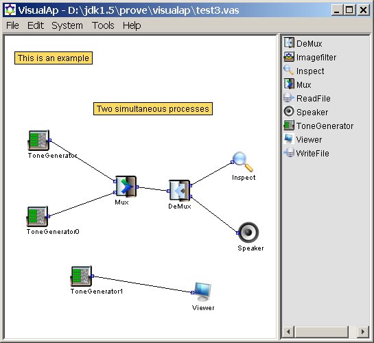
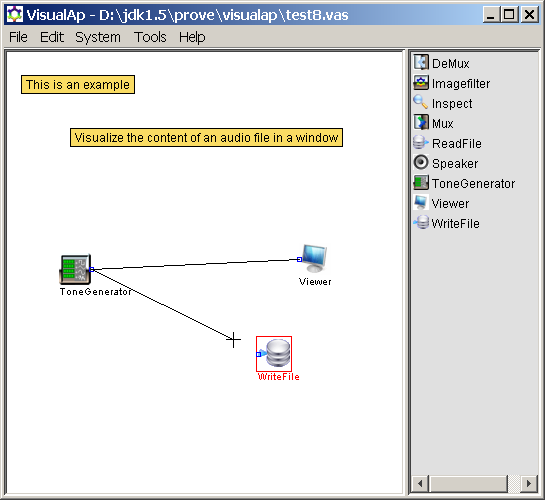
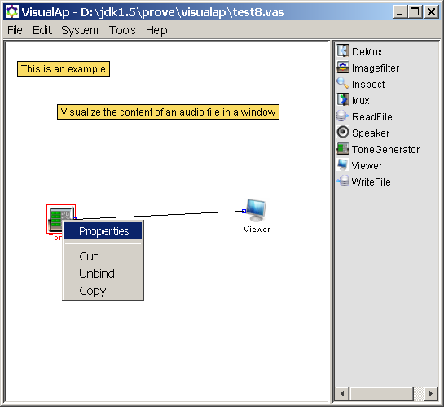
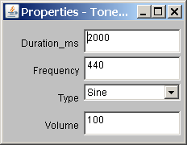

[Main Index]
User Interface
Description
This
program creates a graphic window with a menu, a workplace panel and a
toolbox panel. When needed, a floating window appears to show
properties of the components.

From the
application menu it is possible to open a file dialog, print dialog,
help window, preference dialog and an about box.
The workspace is the place where you build your system. You can
create, move, edit any components in the workplace panel
using the mouse buttons.
Components
can be connected together by first pressing the mouse button over a
terminal, then move the mouse pointer over another terminal and then
release the mouse button: an edge between the two terminals is
created.
The
following picture was taken during the connection:

A popup menu
is shown when the right button of the mouse is pressed over the
workplace panel. Note that mouse cursor changes when specific actions
are performed, e.g. during dragging.
It is
possible to use keyboard accelerators like Ctrl+C, Ctrl+X, Ctrl+V,
Ctrl+S, Ctrl+N, Ctrl+O, Ctrl+P, F1.
The
program supports selections of multiple objects by dragging the mouse
cursor. Copy and paste are supported.
The
toolbox shows the available javabeans (proclet) via their icons and
names. The user can select a component by clicking the mouse pointer
in the toolbox area. After releasing the mouse button, the cursor
changes to cross-hair cursor indicating that a component was selected.
Then you move the cross-hair cursor in the left panel and click
again: when the mouse button is released, the selected component is
placed in the workplace panel.
It is
possible to view/modify the configuration of a component by
double-click over a component in the workplace panel.
Properties
of components are shown in the "properties" floating
window. It is possible to change each property of a component by
changing data inside the "properties" windows.


In case
you set data that are not allowed by the component, a dialog box will
pop-up explaining the limitation.
Main index